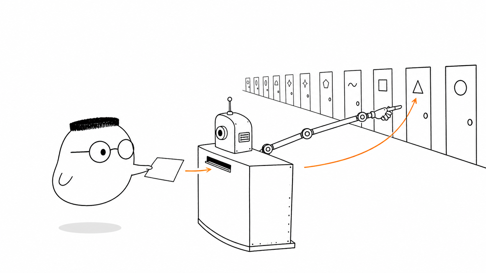
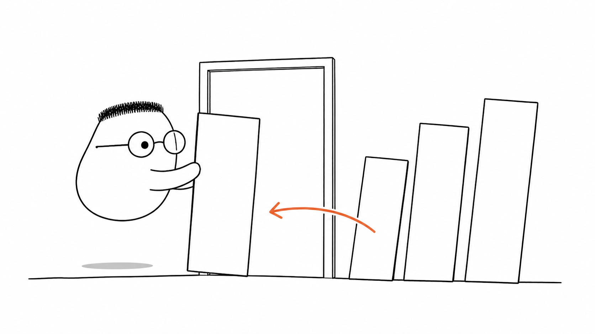
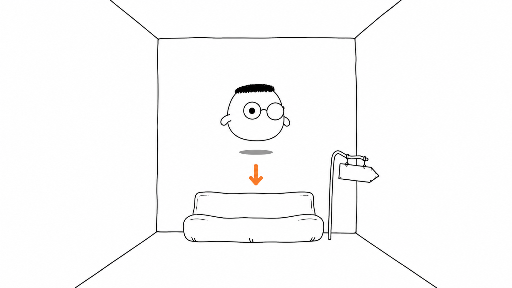

Masalah sehari-hari
Request yang tiba di server belum tahu siapa yang harus mengerjakannya. Server perlu membaca method dan path, lalu menemukan handler yang sesuai.
Analogi Kuka
Kuka tiba di gedung kantor dengan satu meja resepsionis dan banyak pintu. Ia menyerahkan kertas permintaan kepada resepsionis.
Resepsionis membaca kata kerja dan nama pintu pada kertas itu. Lalu ia menunjuk satu pintu agar Kuka bertemu petugas yang tepat.
Peta sederhananya
Kertas Kuka adalah request. Kata kerja di kertas adalah method. Nama pintu adalah path. Resepsionis adalah router. Petugas di balik pintu adalah handler.
Ilustrasi

Perhatikan satu keputusan utama. Resepsionis tidak mengirim Kuka ke semua ruangan. Ia memilih satu pintu berdasarkan isi kertas.
Penjelasan konsep
Routing adalah proses memetakan request ke handler. Router membaca method dan path, lalu memilih petugas yang menjalankan pekerjaan dan mengirim respons.
Method dan path bekerja sebagai satu petunjuk. GET /kamar bisa meminta daftar kamar, sedangkan POST /kamar bisa meminta pembuatan kamar baru. Path-nya sama, tetapi pintu yang dipilih berbeda karena method-nya berbeda.
Route statis
Route statis seperti pintu bernama tetap. /tentang selalu menunjuk ruangan yang sama. Nama pintunya tidak berubah untuk setiap request.
Route dinamis memakai satu pola untuk banyak nilai. Route /kamar/:id dapat menerima /kamar/42 atau /kamar/77. Bingkai pintunya satu, tetapi nomor kamar yang dibaca handler dapat berganti.

Parameter query
Query adalah catatan tambahan di kertas, bukan bagian nama pintu. Contohnya /kamar?lantai=4. Catatan itu dapat menyaring atau mengurutkan hasil.
Path vs query
Path menunjuk benda atau tujuan utama, seperti /kamar/42. Query membawa pilihan tambahan, seperti ?lantai=4. Nama pintu dan catatan tempelan punya tugas berbeda.
Route bertingkat
Route bertingkat seperti lorong dalam lorong. /gedung/2/kamar/42 menyebut gedung lebih dulu, lalu kamar di dalamnya.
Jika tidak ada pintu yang cocok, router tetap perlu memberi arah. Route catch-all membawa alamat yang tidak dikenal ke ruang tunggu agar server dapat mengirim respons yang jelas.
Route catch-all
Catch-all adalah jalur cadangan untuk path yang tidak cocok dengan route lain. Kuka tidak diusir. Ia diarahkan ke ruang tunggu dan menerima respons seperti 404.

Diagram alur
Request masuk membawa method dan path. Router membacanya, menunjuk handler, lalu handler menghasilkan respons untuk keluar.
Contoh mini
Kartu masuk GET /kamar/42 Host: gedung.test Kartu keluar 200 OK Kamar 42 siap.
Seperti kartu pos, request menyebut tujuan dan tindakan. Router membaca /kamar/42, lalu mengirim kartu itu ke handler kamar.
Ringkasan
- Router membaca method dan path pada request.
- Gabungan method dan path menentukan handler yang bekerja.
- Route statis memakai nama pintu tetap.
- Route dinamis memakai pola dengan parameter path.
- Query membawa catatan tambahan di luar nama pintu.
- Catch-all menampung alamat yang tidak dikenal.
Pertanyaan pemahaman
- Apa tugas router saat request tiba di server?
- Apa beda pintu bernama tetap dan pintu berpola yang menerima banyak nama?
- Kapan informasi ditaruh di path, kapan di query?
Mau lebih dalam
Versi teknis membahas cara routing tumbuh dari route sederhana menjadi peta endpoint yang lebih lengkap.